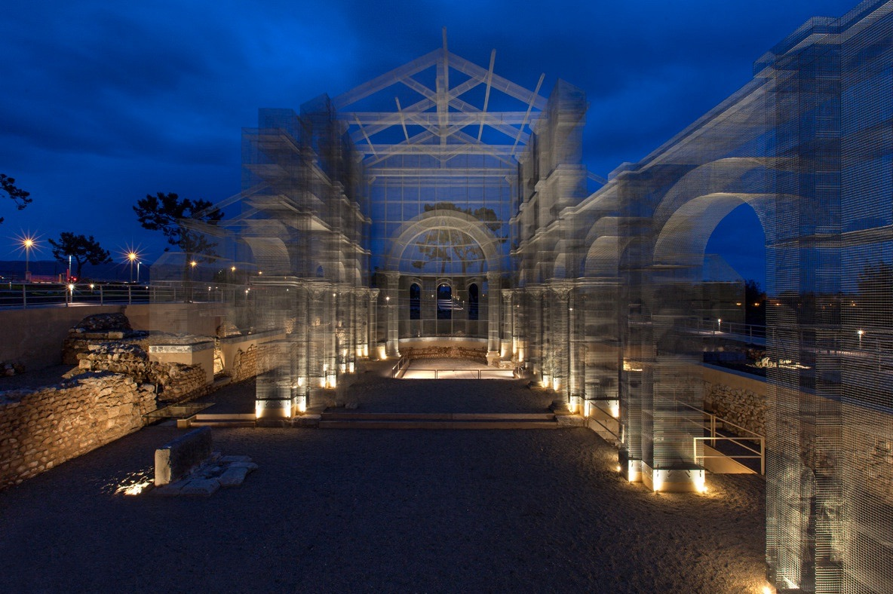
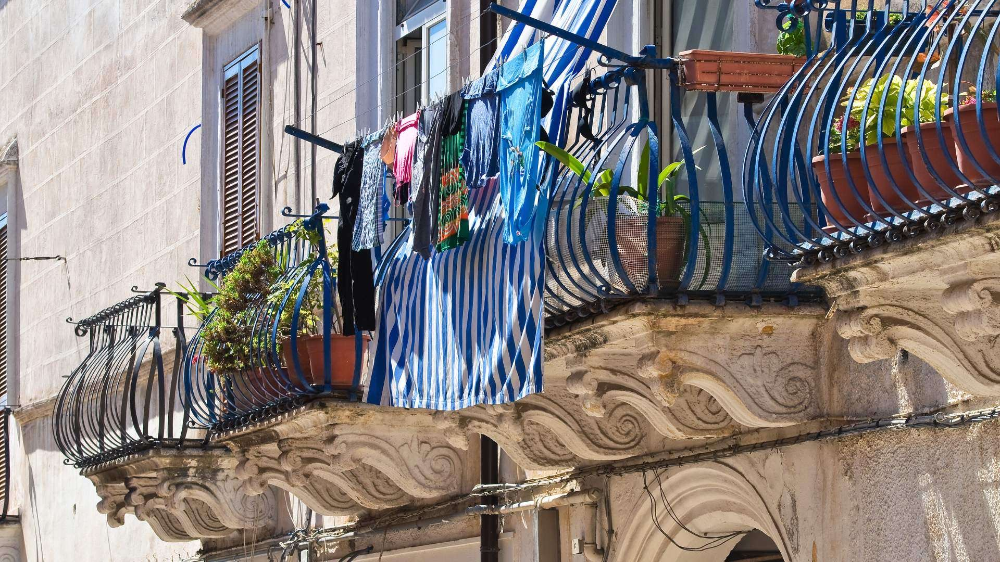

Es gibt Orte, die verändern, wie man fühlt. Die Basilika von Siponto ist einer davon. Drei Kilometer von Manfredonia entfernt — fünf Minuten mit dem Auto von Casa e Bottega — zwischen knorrigen Olivenbäumen und dem Geruch von Salz findet man eine Kirche aus dem 5. Jahrhundert, die teils aus dem Fels gehauen wurde, und darüber eine Kathedrale aus Drahtgeflecht, die nicht existiert und doch existiert. Es ist Architektur, Erinnerung, Kunst und Spiritualität in einem. Es ist der einzige Ort, an dem wir von Casa e Bottega Ungläubige weinen gesehen haben.
Siponto: eine Stadt, die verschwand
Um die Basilika von Siponto zu verstehen, muss man die Stadt verstehen, die es nicht mehr gibt. Siponto war eine römische Stadt — 89 v. Chr. als Kolonie gegründet — und zuvor ein messapischer Hafen. Sie hatte ihre Thermen, ihr Amphitheater, ihre Mauern. Sie war eine der wichtigsten Stationen der Via Traiana und Jahrhunderte lang einer der aktivsten Häfen an der südlichen Adria, Einschiffungsort für das Heilige Land während der Kreuzzüge.
Dann kam das Erdbeben von 1223. Es war nicht das erste — die Region war schon mehrmals getroffen worden — aber es war das endgültige. Die Stadt wurde aufgegeben. Friedrich II. von Hohenstaufen ließ nahe dabei eine neue Stadt gründen: Manfredonia, die nach seinem Sohn Manfredi benannt wurde. Die Einwohner Sipontos wurden umgesiedelt. Die alte Stadt blieb zurück — mit ihren Steinen und ihrer Basilika, die das Meer anschaut.
Heute ist von Siponto fast nur noch dies geblieben: die Basilika und die Stille. Aber diese Stille hat eine besondere Dichte — achthundert Jahre des Schweigens, unterbrochen nur von den Pilgern, die immer wieder kamen.
Die frühchristliche Basilika — das steinerne Herz
Die Basilika von Siponto ist eine der bedeutendsten frühchristlichen Stätten an der Adriaküste. Im 5. Jahrhundert erbaut, als Siponto noch ein wichtiger Hafen auf dem Weg in die Levante war, ist die Kirche teilweise in den Fels gehauen. Die Säulen sind rau, die Kapitelle schlicht, die originalen Fresken fast verschwunden — aber der kreuzförmige Grundriss ist noch klar erkennbar. In diesen Mauern haben Menschen vierzehnhundert Jahre lang gebetet.
Edoardo Tresoldis Installation — Erinnerung aus Drahtgeflecht

Im Jahr 2016 beauftragte das italienische Kulturministerium den Künstler Edoardo Tresoldi mit einer ungewöhnlichen Aufgabe: die mittelalterliche Kirche, die einst über der frühchristlichen Basilika stand, visuell wieder zum Leben zu erwecken. Tresoldis Lösung war eine Kathedrale aus Drahtgeflecht — Eisendraht, der zu Bögen, Säulen und Apsiden gewebt wurde. Sie rekonstruiert das Volumen der verschwundenen Kirche, ohne so zu tun, als wäre sie aus Stein. Aus der Nähe ist das Geflecht fast durchsichtig; aus der Ferne wirkt es massiv und majestätisch.
Das Werk trägt schlicht den Titel „Basilica di Siponto" und gewann 2017 den Sonderpreis der Jury auf dem Fuorisalone in Mailand. Nachts, wenn die Installation beleuchtet wird, steht die Geisterkathedrale wie ein Traum aus Stein gegen den Himmel.
Die beste Zeit für einen Besuch
Besuchen Sie Siponto wenn möglich zweimal: einmal tagsüber, einmal nach Sonnenuntergang. Tagsüber sehen Sie, wie das Gargano-Licht mit dem Drahtgeflecht zusammenspielt — die Schatten wandern wie auf einer Sonnenuhr, und die Installation verändert stündlich ihr Aussehen. Nachts, wenn die Basilika beleuchtet ist, wird das Geflecht zu etwas ganz anderem: purer Form aus Licht.
Spiritualität ohne religiöse Zugehörigkeit
Ein Architekt denkt an Raumgeometrie. Ein Fotograf an Lichtkomposition. Ein Gläubiger an die Märtyrer vergangener Jahrhunderte. Ein Ungläubiger... schweigt einfach. Siponto ist einer der wenigen Orte, an denen Sakralität eine Qualität des Raumes ist, keine Auferlegung der Religion. Man muss an nichts glauben, um zu spüren, dass hier etwas Wichtiges geschehen ist.
Häufige Fragen zu Siponto
Was ist die Basilika von Siponto?
Die Basilika von Siponto ist eine frühchristliche Kirche aus dem 5. Jahrhundert im Bereich der antiken römischen Stadt Siponto, etwa 3 km von Manfredonia entfernt. Sie ist einer der ältesten Kultorte an der Adriaküste und beherbergt die berühmte Drahtgeflecht-Installation von Edoardo Tresoldi.
Wer ist Edoardo Tresoldi?
Edoardo Tresoldi ist ein 1987 geborener italienischer Künstler, bekannt für Drahtgeflecht-Installationen, die verschwundene Architektur rekonstruieren. Sein Werk in Siponto (2016–2017) gewann den Sonderpreis der Jury auf dem Fuorisalone in Mailand und erlangte internationale Anerkennung.
Wie kommt man von Manfredonia nach Siponto?
Siponto liegt etwa 3 km vom Zentrum Manfredonias entfernt — 5 Minuten mit dem Auto auf der SP53. Auch per Fahrrad auf dem flachen Küstenweg erreichbar (ca. 15 Minuten), oder zu Fuß in 35–40 Minuten. Von Casa e Bottega aus leicht zu erreichen.
Ist die Tresoldi-Basilika immer geöffnet?
Der Außenbereich der Basilika von Siponto ist tagsüber zugänglich. Die Installation wird abends beleuchtet und ist auch nachts von außen sichtbar. Öffnungszeiten und Innenzugang können variieren — bitte vorab die Website des Polo Museale della Puglia prüfen.
Kostet der Besuch in Siponto etwas?
Der Zugang zum Außenbereich der Basilika von Siponto ist kostenlos. Für Führungen im Inneren oder Sonderveranstaltungen kann ein Eintrittspreis verlangt werden. Tresoldis Installation ist jederzeit von außen kostenlos sichtbar.